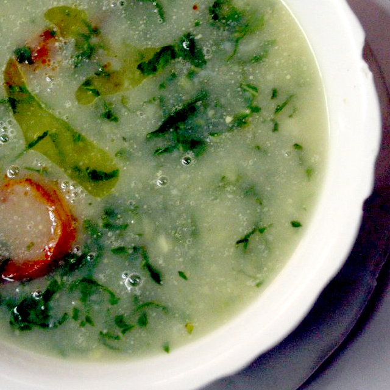
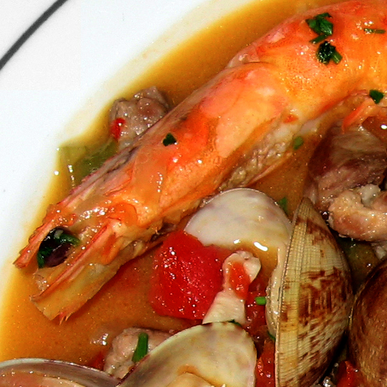

-
Start
-

Tower of Belem
-

The Discoveries
-

Bridge
-

Praca
-
End
Menu
-
Caldo Verde
This is the favorite traditional green soup of the Portuguese. The ingredients are cabbage, onions, thin sliced potatoes, and chouriço
Caldo Verde rivals bacalhau as the national dish of Portugal. Although it is originally from the Minho province in northern Portugal, caldo verde is a very popular soup in Lisbon as well.

-
Cataplana
This delicious stew has is made with clams, chouriço, ham, onion, garlic, and tomato, and seasoned with parsley and ground chili pepper
Not to be confused with the name of the special cookware used to prepare this dish, the cataplana seafood dish is a popular, traditional meal from the Algarve coast. Cataplana recipes vary from one region to another. For example, in the Western Algarve, locals often add potatoes and/or shrimp and mussels to the dish.
-
Bacalhau à Brás
This is one of the favorite styles of preparing Bacalhau - with eggs, onions, rice, and a black olive garnish

Bacalhau, or "codfish", is the basis of Portugal's economy, and the most popular fish in Portuguese cuisine. In fact, it is often said that the Portuguese have 365 ways to serve cod - one way for each day of the year.
-
Pastéis de Bacalhau
Codfish pastries made with parsley and egg, served with rice for a heavier meal

These delicious codfish pastries are often served as a starter, but they are also a fantastic main course when served with rice. This is yet another popular way of preparing codfish.
-
Caldeirada de Bacalhau
Another popular form of preparing Bacalhau is this hearty stew with potatoes

Like many other Portuguese dishes, the specific fish used in caldeirada may vary from one town to the next depending on what fish is available. The original recipe for caldeirada was considered "the rich man's stew," but it has since become a popular dish for everyone.
-
Bacalhau Cozido
Baked cod seasoned with garlic and olive oil served with cooked cabbage, carrot, and potato

One of the original reasons that codfish became so popular in Portugal and other Roman Catholic countries was because of the many days, such s Fridays, Lent, and other festivals, that eating meat is forbidden by the Church.
-
Arroz de Pato
Duck rice made with ham, chouriço, and a hint of lemon

This traditional meal originated in Braga, a region in northwestern Portugal. Although called "duck rice," this dish is usually made with a combination of different meats, and is generally accompanied by a variety of vegetables, and also seasoned with various herbs and spices.
-
Feijoada
Traditional stew of beans with beef and pork

The word "feijão" is Portuguese for "beans" - so it is not surprising that beans feature heavily in this dish. Like many Portuguese meals, there are a variety of ways to make this traditional food. For example, in northwest Portugal, feijoada is usually made with white beans, whereas in the northeast, it is generally prepared with kidney beans and other vegetables, such s tomatoes, carrots, and cabbage.
-
White wine
Crisp, refreshing white wine from the Bucelas region

Portugal has been a major wine exporter since the time of the Roman Empire. There are a great many wine varieties in the country, including meaty red wines from northern Portugal, strong-flavored dessert wines from Port, and the famous sweet wine of Madeira.
-
Red wine
Meaty red wine from northern Portugal

Portugal has been a major wine exporter since the time of the Roman Empire. There are a great many wine varieties in the country, including meaty red wines from northern Portugal, strong-flavored dessert wines from Port, and the famous sweet wine of Madeira.
-
Caipirinha
Cocktail made with sugar, lime, and cachaça

Although originally imported from Brazil, this cocktail has been in big hit in Portugal. There are several variations on the caipirinha in Lisbon, including the "caipirão" (with licor Beirão), the "caipiroska" (with vodka), the "caipinegra" (with blackberry vodka), and the "morangoska" (with vodka and fresh strawberries).
-
Arroz Doce
Traditional rice pudding flavored with lemon zest and cinnamon

This traditional Portuguese favorite came to from Asia and the Middle East during the Crusades. Older variations were made with molasses, and therefore had a much darker color. Now, it is usually made with white sugar. Arroz dice is particularly popular in Portugal during Christmas.
-
Eat & Travel London
7 Camden Mews London NW1 UK
Enquiries Phone: (412) 336 8839 Email: service@eatandtravel.pt